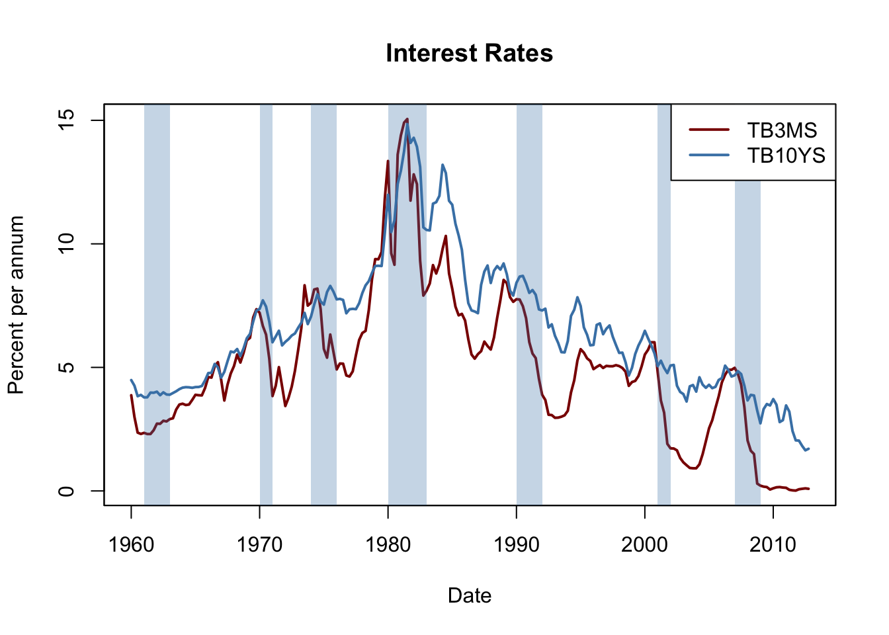

14.5 Additional Predictors and The ADL Model
Instead of only using the dependent variable’s lags as predictors, an autoregressive distributed lag (ADL) model also uses lags of other variables for forecasting. The general ADL model is summarized in Key Concept 14.4:
Key Concept 14.4
The Autoregressive Distributed Lag Model
An ADL(\(p\),\(q\)) model assumes that a time series \(Y_t\) can be represented by a linear function of \(p\) of its lagged values and \(q\) lags of another time series \(X_t\): \[\begin{align*} Y_t =& \, \beta_0 + \beta_1 Y_{t-1} + \beta_2 Y_{t-2} + \dots + \beta_p Y_{t-p} \\ &+ \, \delta_1 X_{t-1} + \delta_2 X_{t-2} + \dots + \delta_q X_{t-q} + u_t. \end{align*}\] is an autoregressive distributed lag model with \(p\) lags of \(Y_t\) and \(q\) lags of \(X_t\) where \[E(u_t\vert Y_{t-1}, Y_{t-2}, \dots, X_{t-1}, X_{t-2}, \dots)=0.\]
Forecasting GDP Growth Using the Term Spread
Interest rates on long-term and short term treasury bonds are closely linked to macroeconomic conditions. While interest rates on both types of bonds have the same long-run tendencies, they behave quite differently in the short run. The difference in interest rates of two bonds with distinct maturity is called the term spread.
The following code chunks reproduce Figure 14.3 of the book which displays interest rates of 10-year U.S. Treasury bonds and 3-month U.S. Treasury bills from 1960 to 2012.
# 3-month Treasury bills interest rate
TB3MS <- xts(USMacroSWQ$TB3MS, USMacroSWQ$Date)["1960::2012"]
# 10-year Treasury bonds interest rate
TB10YS <- xts(USMacroSWQ$GS10, USMacroSWQ$Date)["1960::2012"]
# term spread
TSpread <- TB10YS - TB3MS# reproduce Figure 14.2 (a) of the book
plot(merge(as.zoo(TB3MS), as.zoo(TB10YS)),
plot.type = "single",
col = c("darkred", "steelblue"),
lwd = 2,
xlab = "Date",
ylab = "Percent per annum",
main = "Interest Rates")
# define function that transform years to class 'yearqtr'
YToYQTR <- function(years) {
return(
sort(as.yearqtr(sapply(years, paste, c("Q1", "Q2", "Q3", "Q4"))))
)
}
# recessions
recessions <- YToYQTR(c(1961:1962, 1970, 1974:1975, 1980:1982, 1990:1991, 2001,
2007:2008))
# add color shading for recessions
xblocks(time(as.zoo(TB3MS)),
c(time(TB3MS) %in% recessions),
col = alpha("steelblue", alpha = 0.3))
# add a legend
legend("topright",
legend = c("TB3MS", "TB10YS"),
col = c("darkred", "steelblue"),
lwd = c(2, 2))
# reproduce Figure 14.2 (b) of the book
plot(as.zoo(TSpread),
col = "steelblue",
lwd = 2,
xlab = "Date",
ylab = "Percent per annum",
main = "Term Spread")
# add color shading for recessions
xblocks(time(as.zoo(TB3MS)),
c(time(TB3MS) %in% recessions),
col = alpha("steelblue", alpha = 0.3))
Before recessions, the gap between interest rates on long-term bonds and short term bills narrows and consequently the term spread declines drastically towards zero or even becomes negative in times of economic stress. This information might be used to improve GDP growth forecasts of future.
We check this by estimating an ADL(\(2\), \(1\)) model and an ADL(\(2\), \(2\)) model of the GDP growth rate using lags of GDP growth and lags of the term spread as regressors. We then use both models for forecasting GDP growth in 2013:Q1.
# convert growth and spread series to ts objects
GDPGrowth_ts <- ts(GDPGrowth,
start = c(1960, 1),
end = c(2013, 4),
frequency = 4)
TSpread_ts <- ts(TSpread,
start = c(1960, 1),
end = c(2012, 4),
frequency = 4)
# join both ts objects
ADLdata <- ts.union(GDPGrowth_ts, TSpread_ts)# estimate the ADL(2,1) model of GDP growth
GDPGR_ADL21 <- dynlm(GDPGrowth_ts ~ L(GDPGrowth_ts) + L(GDPGrowth_ts, 2) +
L(TSpread_ts), start = c(1962, 1), end = c(2012, 4))
coeftest(GDPGR_ADL21, vcov. = sandwich)
#>
#> t test of coefficients:
#>
#> Estimate Std. Error t value Pr(>|t|)
#> (Intercept) 0.954990 0.486976 1.9611 0.051260 .
#> L(GDPGrowth_ts) 0.267729 0.082562 3.2428 0.001387 **
#> L(GDPGrowth_ts, 2) 0.192370 0.077683 2.4763 0.014104 *
#> L(TSpread_ts) 0.444047 0.182637 2.4313 0.015925 *
#> ---
#> Signif. codes: 0 '***' 0.001 '**' 0.01 '*' 0.05 '.' 0.1 ' ' 1The estimated equation of the ADL(\(2\), \(1\)) model is \[\begin{align} \widehat{GDPGR}_t = \underset{(0.49)}{0.96} + \underset{(0.08)}{0.26} GDPGR_{t-1} + \underset{(0.08)}{0.19} GDPGR_{t-2} + \underset{(0.18)}{0.44} TSpread_{t-1} \tag{14.4} \end{align}\]
All coefficients are significant at the level of \(5\%\).
# 2012:Q3 / 2012:Q4 data on GDP growth and term spread
subset <- window(ADLdata, c(2012, 3), c(2012, 4))
# ADL(2,1) GDP growth forecast for 2013:Q1
ADL21_forecast <- coef(GDPGR_ADL21) %*% c(1, subset[2, 1], subset[1, 1],
subset[2, 2])
ADL21_forecast
#> [,1]
#> [1,] 2.241689
# compute the forecast error
window(GDPGrowth_ts, c(2013, 1), c(2013, 1)) - ADL21_forecast
#> Qtr1
#> 2013 -1.102487Model (14.4) predicts the GDP growth in 2013:Q1 to be \(2.24\%\) which leads to a forecast error of \(-1.10\%\).
We estimate the ADL(\(2\),\(2\)) specification to see whether adding additional information on past term spread improves the forecast.
# estimate the ADL(2,2) model of GDP growth
GDPGR_ADL22 <- dynlm(GDPGrowth_ts ~ L(GDPGrowth_ts) + L(GDPGrowth_ts, 2)
+ L(TSpread_ts) + L(TSpread_ts, 2),
start = c(1962, 1), end = c(2012, 4))
coeftest(GDPGR_ADL22, vcov. = sandwich)
#>
#> t test of coefficients:
#>
#> Estimate Std. Error t value Pr(>|t|)
#> (Intercept) 0.967967 0.472470 2.0487 0.041800 *
#> L(GDPGrowth_ts) 0.243175 0.077836 3.1242 0.002049 **
#> L(GDPGrowth_ts, 2) 0.177070 0.077027 2.2988 0.022555 *
#> L(TSpread_ts) -0.139554 0.422162 -0.3306 0.741317
#> L(TSpread_ts, 2) 0.656347 0.429802 1.5271 0.128326
#> ---
#> Signif. codes: 0 '***' 0.001 '**' 0.01 '*' 0.05 '.' 0.1 ' ' 1We obtain \[\begin{align} \begin{split} \widehat{GDPGR}_t =& \underset{(0.47)}{0.98} + \underset{(0.08)}{0.24} GDPGR_{t-1} \\ & + \underset{(0.08)}{0.18} GDPGR_{t-2} -\underset{(0.42)}{0.14} TSpread_{t-1} + \underset{(0.43)}{0.66} TSpread_{t-2}. \end{split} \tag{14.5} \end{align}\]
The coefficients on both lags of the term spread are not significant at the \(10\%\) level.
# ADL(2,2) GDP growth forecast for 2013:Q1
ADL22_forecast <- coef(GDPGR_ADL22) %*% c(1, subset[2, 1], subset[1, 1],
subset[2, 2], subset[1, 2])
ADL22_forecast
#> [,1]
#> [1,] 2.274407
# compute the forecast error
window(GDPGrowth_ts, c(2013, 1), c(2013, 1)) - ADL22_forecast
#> Qtr1
#> 2013 -1.135206The ADL(\(2\),\(2\)) forecast of GDP growth in 2013:Q1 is \(2.27\%\) which implies a forecast error of \(1.14\%\).
Do the ADL models (14.4) and (14.5) improve upon the simple AR(\(2\)) model (14.3)? The answer is yes: while \(SER\) and \(\bar{R}^2\) improve only slightly, an \(F\)-test on the term spread coefficients in (14.5) provides evidence that the model does better in explaining GDP growth than the AR(\(2\)) model as the hypothesis that both coefficients are zero can be rejected at the level of \(5\%\).
# compare adj. R2
c("Adj.R2 AR(2)" = summary(GDPGR_AR2)$adj.r.squared,
"Adj.R2 ADL(2,1)" = summary(GDPGR_ADL21)$adj.r.squared,
"Adj.R2 ADL(2,2)" = summary(GDPGR_ADL22)$adj.r.squared)
#> Adj.R2 AR(2) Adj.R2 ADL(2,1) Adj.R2 ADL(2,2)
#> 0.1338873 0.1620156 0.1691531
# compare SER
c("SER AR(2)" = summary(GDPGR_AR2)$sigma,
"SER ADL(2,1)" = summary(GDPGR_ADL21)$sigma,
"SER ADL(2,2)" = summary(GDPGR_ADL22)$sigma)
#> SER AR(2) SER ADL(2,1) SER ADL(2,2)
#> 3.132122 3.070760 3.057655
# F-test on coefficients of term spread
linearHypothesis(GDPGR_ADL22,
c("L(TSpread_ts)=0", "L(TSpread_ts, 2)=0"),
vcov. = sandwich)
#> Linear hypothesis test
#>
#> Hypothesis:
#> L(TSpread_ts) = 0
#> L(TSpread_ts, 2) = 0
#>
#> Model 1: restricted model
#> Model 2: GDPGrowth_ts ~ L(GDPGrowth_ts) + L(GDPGrowth_ts, 2) + L(TSpread_ts) +
#> L(TSpread_ts, 2)
#>
#> Note: Coefficient covariance matrix supplied.
#>
#> Res.Df Df F Pr(>F)
#> 1 201
#> 2 199 2 4.4344 0.01306 *
#> ---
#> Signif. codes: 0 '***' 0.001 '**' 0.01 '*' 0.05 '.' 0.1 ' ' 1Stationarity
In general, forecasts can be improved by using multiple predictors — just as in cross-sectional regression. When constructing time series models one should take into account whether the variables are stationary or nonstationary. Key Concept 14.5 explains what stationarity is.
Key Concept 14.5
Stationarity
A time series \(Y_t\) is stationary if its probability distribution is time independent, that is, the joint distribution of \(Y_{s+1}, Y_{s+2},\dots,Y_{s+T}\) does not change as \(s\) is varied, regardless of \(T\).
Similarly, two time series \(X_t\) and \(Y_t\) are jointly stationary if the joint distribution of \((X_{s+1},Y_{s+1}, X_{s+2},Y_{s+2} \dots, X_{s+T},Y_{s+T})\) does not depend on \(s\), regardless of \(T\).
Stationarity makes it easier to learn about the characteristics of past data.
Time Series Regression with Multiple Predictors
The concept of stationarity is a key assumption in the general time series regression model with multiple predictors. Key Concept 14.6 lays out this model and its assumptions.
Key Concept 14.6
Time Series Regression with Multiple Predictors
The general time series regression model extends the ADL model such that multiple regressors and their lags are included. It uses \(p\) lags of the dependent variable and \(q_l\) lags of \(l\) additional predictors where \(l=1,\dots,k\):
\[\begin{equation} \begin{aligned} Y_t =& \beta_0 + \beta_1 Y_{t-1} + \beta_2 Y_{t-2} + \dots + \beta_{p} Y_{t-p} \\ &+ \delta_{11} X_{1,t-1} + \delta_{12} X_{1,t-2} + \dots + \delta_{1q} X_{1,t-q} \\ &+ \dots \\ &+ \delta_{k1} X_{k,t-1} + \delta_{k2} X_{k,t-2} + \dots + \delta_{kq} X_{k,t-q} \\ &+ u_t. \end{aligned} \end{equation}\]
For estimation we make the following assumptions:
The error term \(u_t\) has conditional mean zero given all regressors and their lags: \[E(u_t\vert Y_{t-1}, Y_{t-2}, \dots, X_{1,t-1}, X_{1,t-2} \dots, X_{k,t-1}, X_{k,t-2}, \dots,)\] This assumption is an extension of the conditional mean zero assumption used for AR and ADL models and guarantees that the general time series regression model stated above gives the best forecast of \(Y_t\) given its lags, the additional regressors \(X_{1,t},\dots,X_{k,t}\) and their lags.
The i.i.d. assumption for cross-sectional data is not (entirely) meaningful for time series data. We replace it by the following assumption which consists of two parts:
The \((Y_{t}, X_{1,t}, \dots, X_{k,t})\) have a stationary distribution (the “identically distributed” part of the i.i.d. assumption for cross-sectional data). If this does not hold, forecasts may be biased and inference can be strongly misleading.
\((Y_{t}, X_{1,t}, \dots, X_{k,t})\) and \((Y_{t-j}, X_{1,t-j}, \dots, X_{k,t-j})\) become independent as \(j\) gets large (the “independently” distributed part of the i.i.d. assumption for cross-sectional data). This assumption is also called weak dependence. It ensures that the WLLN and the CLT hold in large samples.
Large outliers are unlikely: \(E(X_{1,t}^4), E(X_{2,t}^4), \dots, E(X_{k,t}^4)\) and \(E(Y_t^4)\) have nonzero, finite fourth moments.
No perfect multicollinearity.
Since many economic time series appear to be nonstationary, assumption two of Key Concept 14.6 is a crucial one in applied macroeconomics and finance which is why statistical test for stationarity or nonstationarity have been developed. Chapters 14.6 and 14.7 are devoted to this topic.
Statistical inference and the Granger causality test
If a \(X\) is a useful predictor for \(Y\), in a regression of \(Y_t\) on lags of its own and lags of \(X_t\), not all of the coefficients on the lags on \(X_t\) are zero. This concept is called Granger causality and is an interesting hypothesis to test. Key Concept 14.7 summarizes the idea.
Key Concept 14.7
Granger Causality Tests
The Granger causality test Granger (1969) is an \(F\) test of the null hypothesis that all lags of a variable \(X\) included in a time series regression model do not have predictive power for \(Y_t\). The Granger causality test does not test whether \(X\) actually causes \(Y\) but whether the included lags are informative in terms of predicting \(Y\).
We have already performed a Granger causality test on the coefficients of term spread in (14.5), the ADL(\(2\),\(2\)) model of GDP growth and concluded that at least one of the first two lags of term spread has predictive power for GDP growth.
Forecast Uncertainty and Forecast Intervals
In general, it is good practice to report a measure of the uncertainty when presenting results that are affected by the latter. Uncertainty is particularly of interest when forecasting a time series. For example, consider a simple ADL\((1,1)\) model \[\begin{align*} Y_t = \beta_0 + \beta_1 Y_{t-1} + \delta_1 X_{t-1} + u_t, \end{align*}\] where \(u_t\) is a homoskedastic error term. The forecast error is \[\begin{align*} Y_{T+1} - \widehat{Y}_{T+1\vert T} = u_{T+1} - \left[(\widehat{\beta}_0 - \beta_0) + (\widehat{\beta}_1 - \beta_1) Y_T + (\widehat{\delta_1} - \delta_1) X_T \right]. \end{align*}\] The mean squared forecast error (MSFE) and the RMSFE are \[\begin{align*} MSFE =& \, E\left[(Y_{T+1} - \widehat{Y}_{T+1\vert T})^2 \right] \\ =& \, \sigma_u^2 + Var\left[ (\widehat{\beta}_0 - \beta_0) + (\widehat{\beta}_1 - \beta_1) Y_T + (\widehat{\delta_1} - \delta_1) X_T \right], \\ RMSFE =& \, \sqrt{\sigma_u^2 + Var\left[ (\widehat{\beta}_0 - \beta_0) + (\widehat{\beta}_1 - \beta_1) Y_T + (\widehat{\delta_1} - \delta_1) X_T \right]}. \end{align*}\]
A \(95\%\) forecast interval is an interval that covers the true value of \(Y_{T+1}\) in \(95\%\) of repeated applications. There is a major difference in computing a confidence interval and a forecast interval: when computing a confidence interval of a point estimate we use large sample approximations that are justified by the CLT and thus are valid for a large range of error term distributions. For computation of a forecast interval of \(Y_{T+1}\), however, we must make an additional assumption about the distribution of \(u_{T+1}\), the error term in period \(T+1\). Assuming that \(u_{T+1}\) is normally distributed one can construct a \(95\%\) forecast interval for \(Y_{T+1}\) using \(SE(Y_{T+1} - \widehat{Y}_{T+1\vert T})\), an estimate of the RMSFE: \[\begin{align*} \widehat{Y}_{T+1\vert T} \pm 1.96 \cdot SE(Y_{T+1} - \widehat{Y}_{T+1\vert T}) \end{align*}\] Of course, the computation gets more complicated when the error term is heteroskedastic or if we are interested in computing a forecast interval for \(T+s, s>1\).
In some applications it is useful to report multiple forecast intervals for subsequent periods, see the box The River of Blood on p. 592 of the book. These can be visualized in a so-called fan chart. We will not replicate the fan chart presented in Figure 14.2 of book because the underlying model is by far more complex than the simple AR and ADL models treated here. Instead, in the example below we use simulated time series data and estimate an AR(\(2\)) model which is then used for forecasting the subsequent \(25\) future outcomes of the series.
# set seed
set.seed(1234)
# simulate the time series
Y <- arima.sim(list(order = c(2, 0, 0), ar = c(0.2, 0.2)), n = 200)
# estimate an AR(2) model using 'arima()', see ?arima
model <- arima(Y, order = c(2, 0, 0))
# compute points forecasts and prediction intervals for the next 25 periods
fc <- forecast(model, h = 25, level = seq(5, 99, 10))
# plot a fan chart
plot(fc,
main = "Forecast Fan Chart for AR(2) Model of Simulated Data",
showgap = F,
fcol = "red",
flty = 2)
arima.sim() simulates autoregressive integrated moving average (ARIMA) models. AR models belong to this class of models. We use list(order = c(2, 0, 0), ar = c(0.2, 0.2)) so the DGP is \[Y_t = 0.2 Y_{t-1} + 0.2 Y_{t-2} + u_t.\]
We choose level = seq(5, 99, 10) in the call of forecast() such that forecast intervals with levels \(5\%, 15\%, \dots, 95\%\) are computed for each point forecast of the series.
The dashed red line shows point forecasts of the series for the next 25 periods based on an \(AR(2)\) model and the shaded areas represent the prediction intervals. The degree of shading indicates the level of the prediction interval. The darkest of the blue bands displays the \(5\%\) forecast intervals and the color fades towards grey as the level of the intervals increases.